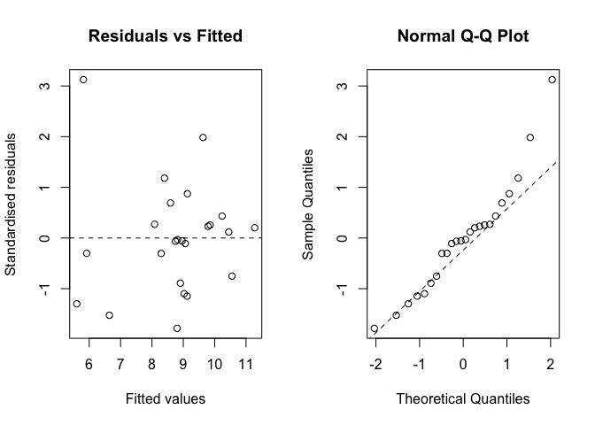

Capitolo 12 Breve introduzione ai modelli misti
In questo libro abbiamo affrontato le questioni più rilevanti in relazione all’attività di ricerca e sperimentazione, almeno quelle che dovrebbero far parte del bagaglio culturale di ogni laureato in agraria o altre discipline biologiche. La trattazione non è affatto esaustiva e quindi, se si avesse l’intenzioni intraprendere una carriera professionale nel mondo dell’analisi dei dati, non si potrebbe prescindere dalla lettura di altri testi di approfondimento, che sono stati via via segnalati. Ci sembra comunque opportuno, in questo capitolo e quello successivo, dare almeno alcune informazioni di base su altri modelli un po’ più complessi, il cui impiego è abbastanza comune nella sperimentazione di pieno campo.
In particolare, in questo libro abbiamo finora considerato i cosidetti modelli fissi, cioè contenenti solo fattori fissi oltre al residuo stocastico. I fattori fissi, identificabili per le seguenti caratteristiche:
- i livelli sono selezionati appositamente (non campionati);
- i livelli sono ripetibili (potremmo effettuare un nuovo esperimento con gli stessi livelli);
- gli effetti attesi sono deterministici ed espressi come differenze (aumenti o diminuzioni) rispetto ad un valore di base.
Esempi di fattore fisso sono il genotipo, le ferrtilizzazioni, le epoche di semina, ecc.
Oltre ai fattori fissi, i modelli in agricoltura e biologia possono richiedere l’inclusione di fattori random che presentano le seguenti caratteristiche:
- i livelli non sono interessanti di per sé, ma sono campionati da una popolazione più ampia di possibili livelli;
- i livelli non sono ripetibili, nel senso che se l’esperimento venisse ripetuto, è molto probabile che sarebbero scelti altri livelli, senza che l’esperimento perda il suo significato biologico;
- gli effetti attesi sono casuali e cambiano ad ogni campionamento;
- i livelli rappresentano unità di randomizzazione a cui vengono assegnati i livelli del trattamento, attraverso un processo di randomizzazione (ad esempio, le parcelle).
Come conseguenza di quanto detto sopra, l’interesse primario per i fattori casuali non è stimare gli effetti di ciascun livello incluso nell’esperimento, ma stimare la quantità complessiva di varianza (componente di varianza) che inducono nella risposta sperimentale.
Ad esempio, nel caso dell’elemento casuale \(\varepsilon\) che abbiamo trovato in tutti i modelli fin qui trattati, non vi è alcun interesse nel valore esatto di ciascun residuo, poiché questi valori si verificano casualmente e, ripetendo l’esperimento, si otterrebbero valori diversi. Invece, i residui sono stati determinati solo per poterne calcolare la relativa varianza, che è l’unico elemento di nostro interesse, da utilizzare per diversi scopi, come, ad esempio, al denominatore del test F. Oltre ai residui, per comprendere meglio cosa è un fattore random, possiamo considerare un esperimento di confronto tra genotipi, che viene ripetuto in diversi campi scelti a caso all’interno di un certo macroambiente. In questo caso, i ‘campi’ non sono, di per se’, interessanti, ma vengono campionati per quantificare la variabilità della resa all’interno dell’intero macroambiente.
Il fattore ‘campo’ nell’esempio precedente costituisce un tipico esempio di grouping factor (fattore di raggruppamento; vedi Capitolo 2); altri esempi includono i blocchi nei disegni a blocchi completi randomizzati, le righe e le colonne nei disegni a quadrato latino e le main-plots nei disegni a split-plot. Tutti questi fattori di raggruppamento creano spesso problemi perché raramente sono interessanti di per sé e quindi vengono spesso trascurati in fase di analisi dei dati. Si tratta di un grave errore, poichè l’effetto di questi fattori di raggruppamento, se trascurato, finisce per essere incluso nei residui, che risulteranno quindi non indipendenti, ma saranno invece accomunati dalla eventuale cappartenenza allo stesso gruppo e dalla conseguente condisione dello stesso effetto di gruppo.
Ad esempio, in un disegno a split-plot, se una main-plot è più fertile di un’altra, tutte le misurazioni effettuate su di essa condivideranno lo stesso effetto positivo e saranno quindi più simili tra di loro che non le misurazioni effettuate su main-plots diverse. Insomma, con uno schema a split-plot, i dati ottenuti sulla stessa main-plot non sono indipendenti, ma sono in qualche modo ‘apparentati’; più propriamente, si parla di correlazione intra-classe, un concetto simile, ma non totalmente coincidente con quello di correlazione di Pearson. Insomma, se l’effetto prodotto dalle main-plots o dagli altri grouping factors non viene incluso nel modello statistico descrittivo, esso rimane tra gli effetti non spiegati e, di conseguenza, viene incluso nei residui, che, pertanto, saranno correlati e quindi non indipendenti tra di loro.
Posto che i grouping factors debbano essere inclusi nel modello, la domanda è: dobbiamo considerare questi fattori come fissi o random? Nella maggior parte dei casi, la decisione spetta al ricercatore, che dovrebbe fornire motivazioni convincenti a sostegno della sua scelta; in altri casi, come accennato in precedenza per il fattore ‘campo’, un fattore di raggruppamento deve obbnligatoriamente essere random, ovvero quando i suoi livelli diventano unità di randomizzazione e ricevono l’allocazione dei livelli di un fattore o di una combinazione di fattori, tramite un processo di randomizzazione (Piepho et al., 2003). Si considerino i seguenti esempi:
- in un disegno a blocchi randomizzati, i blocchi raggruppano le unità in base al loro posizionamento rispetto al ‘gradiente’ di fertilità; tuttavia, non sono unità di randomizzazione nel senso che i livelli di trattamento sono allocati alle parcelle all’interno di ciascun blocco, non ai blocchi stessi. Di conseguenza, il fattore blocco può essere considerato random o fisso, a seconda delle circostanze;
- in un disegno a split-plot, le main-plots raggruppano le sub-plots e sono anche unità di randomizzazione perché ricevono l’llocazione dei livelli del fattore principale. Di conseguenza, il fattore main-plot deve essere necessariamente random.
Il motivo per cui le main-plots e le altre unità di randomizzazione devono essere considerate fattori random è legato al loro ruolo nell’esperimento: secondo Ronald Fisher, la differenza tra le unità sperimentali trattate allo stesso modo è la misura più appropriata dell’errore sperimentale e, di conseguenza, la differenza tra, ad esempio, le main-plots trattate allo stesso modo diviene una misura dell’errore sperimentale, il che significa che l’effetto delle main-plots è, in effetti, random.
Considerando le premesse precedenti, ne consegue che diversi esperimenti comuni in agricoltura, come i disegni split-plot, strip-plot, misure ripetute e sottocampionamento, contengono fattori di raggruppamento e potrebbero richiedere l’inclusione di effetti random nel modello, oltre al residuo. I modelli che contengono più di un effetto random oltre agli eventuali effetti fissi sono chiamati modelli misti e, a partire dagli anni ’80, sono diventati una classe di modelli molto diffusa.
Fornire dettagli sui modelli misti va ben oltre lo scopo di questo libro e i lettori interessati sono invitati a consultare il libro di (Galecki e Burzicoski, 2013). Per tutti gli altri lettori, i seguenti esempi concreti dimostrano come i modelli misti possano essere applicati per analizzare i dati provenienti da esperimenti split-plot, strip-plot e altri tipi comuni nella ricerca agricola.
12.1 Esempio 12.1: un esperimento di lavorazione a split-plot
Consideriamo nuovamente l’esempio presentato nel capitolo 2, nel quale avevamo due fattori sperimentali a confronto: il diserbo, con due livelli (totale o localizzato sulla fila) e la lavorazione, con tre livelli (aratura profonda, aratura superficiale e minimum tillage). Questo esperimento è stato disegnato a split-plot, come indicato in Figura 2.9, ovvero con le lavorazioni allocate a random alle main-plots e il diserbo allocato a caso alle sub-plot, all’interno di ogni main-plot. I risultati di questo esperimento sono disponibili nel dataset ‘beet’, all’interno del package statforbiology.
Il modello ANOVA per un disegno a split-plot è simile a quello dell’ANOVA fattoriale, fatta salva la presenza di un effetto aggiuntivo, cioè quello delle parcelle principali, che costituiscono un elemento di raggruppamento delle osservazioni:
\[Y_{ijk} = \mu + \gamma_k + \alpha_i + \theta_{ik} + \beta_j + \alpha\beta_{ij} + \varepsilon_{ijk}\]
dove \(\gamma\) è l’effetto del blocco \(k\), \(\alpha\) è l’effetto della lavorazione \(i\), \(\beta\) è l’effetto del diserbo \(j\), \(\alpha\beta\) è l’effetto dell’interazione per la specifica combinazione della lavorazione \(i\) e del diserbo \(j\). Abbiamo incluso anche \(\theta\) che è l’effetto della main-plot; dato che ogni parcella principale è identificata univocamente dal blocco \(k\) a cui appartiene e dalla lavorazione \(i\) in essa eseguita, abbiamo utilizzato i pedici corrispondenti.
Nel precedente modello vi sono due fattori di raggruppamento, cioè il blocco e la main-plot. Mentre il blocco non costituisce un’unità di randomizzazione e quindi il suo effetto potrebbe essere considerato o fisso o casuale (ma lo considereremo fisso, come abbiamo sempre fatto finora), le main-plots costituiscono delle unità di randomizzazione e quindi gli effetti che producono debbono essere considerati random, con distribuzione normale, media pari a 0 e deviazione standard pari a \(\sigma_{\theta}\). Allo stesso modo, il residuo \(\varepsilon\) è casuale, con distribuzione normale, media 0 a deviazione standard pari a \(\sigma\).
Stimare un modello misto in R non è molto diverso dallo stimare un modello a effetti fissi. Innanzitutto, dobbiamo creare una nuova variabile per identificare in modo univoco le main-plots, il che può essere fatto creando un nuovo fattore che combini i livelli di blocco e lavorazione, come accennato in precedenza. Successivamente, è necessario abbandonare la funzione lm(), che non permette di inserire effetti random, ed utilizzare un’altra funzione che abbia questa capacità. Tra quelle disponibili, in questo libro proporremo la funzione lmer(), che si trova all’interno del package lme4 (Bates et al. 2015), da utilizzare assieme al package lmerTest (Kuznetsova et al. 2017), che fornisce alcune utili funzionalità aggiuntive ed, in particolare, consente di migliorare la leggibilità della tabella ANOVA.
La sintassi della funzionelmer()è simile a quella della funzionelm(); l'effetto random deve essere inserito utilizzando l'operatore1|e posto tra parentesi, per distinguerlo meglio dagli effetti fissi (riquadro sottostante). In questo capitolo, introduciamo anche l'uso dell'operatore "pipe" (|>`), che serve a scrivere codice più chiaro e riceve il valore restituito dalla funzione precedente, passandolo alla successiva come primo argomento (riquadro sottostante; vedi anche l’Appendice A).
# Example 12.1
# A split-plot tillage experiment
# Loading the packages
library(statforbiology)
library(lme4)
library(lmerTest)
# Loading and transforming the data
dataset <- getAgroData("beet") |>
transform(Tillage = factor(Tillage),
WeedControl = factor(WeedControl),
Block = factor(Block),
mainPlot = factor(Block):factor(Tillage))
# Mixed-Model fitting
mod.split <- lmer(Yield ~ Block + Tillage * WeedControl +
(1|mainPlot), data=dataset)
## boundary (singular) fit: see help('isSingular')Per quanto riguarda le assunzioni di base, i modelli misti sono sempre e comunque modelli linear e quindi fanno le stesse assunzioni di moscedasticità e normalità dei residui. L’ispezione grafica di questi ultimi può essere condotta nel modo usuale, se non che la funzione plot() restituisce solo il grafico dei residui verso i valori attesi (quello corrispondente all’argomento ‘which = 1’ in lm()), mentre l’argomento ‘which’ non funziona. Pertanto, il QQ-plot dovrebbe essere prodotto utilizzando le funzioni generiche qqnorm() e qqline(), come mostrato nel riquadro sottostante. Questi due grafici presentano alcune lievi deviazioni rispetto agli assunti di normalità ed omoschedasticità (Fig. 12.1), ma il test di Shapiro-Wilk non sembra sollevare particolari preoccupazioni, per cui possiamo procedere con le operazioni di inferenza statistica.
# Example 12.1 [continuation]
# Check for the basic assumptions for the 'beet' data
# Graphical analyses (not run)
# plot(mod.split) # Analogous to 'which = 1' for linear models
# qqnorm(resid(mod.split)) # QQ-plot
# qqline(resid(mod.split), lty = 2)
# Shapiro-Wilk's test
shapiro.test(residuals(mod.split))
##
## Shapiro-Wilk normality test
##
## data: residuals(mod.split)
## W = 0.93838, p-value = 0.1501
Figura 12.1: Analisi grafiche dei residui per l’esperimento a split-plot relativo all’esempio 12.1, ove il model fitting è stato eseguito con la funzione lmer()
L’oggetto che risulta dalla stima del modello misto può essere esplorato con i metodi usuali, anche se è necessario ricordare che le stime dei parametri debbono essere ottenuto con la funzione fixef() al posto di coef(). L’ANOVA viene sempre prodotta con l’usuale funzione anova(), che fornisce però un output leggermente diverso dal solito. Come secondo argomento è necessario indicare il metodo prescelto per la stima dei gradi di libertà, che non è così semplice come nel caso dei modelli lineari generali. Consigliamo il metodo ‘Kenward-Roger’ che, pur fornendo comunque un’approssimazione, ha dimostrato ottima affidabilità, superiore a quella del metodo ‘Sattertwhaite’, che verrebbe utilizzato di default (Kuznetsova et al. 2017).
# Example 12.1 [continuation]
# Variance partitioning for the ’beet’ data
anova(mod.split, ddf="Kenward-Roger")
## Type III Analysis of Variance Table with Kenward-Roger's method
## Sum Sq Mean Sq NumDF DenDF F value Pr(>F)
## Block 3.6596 1.2199 3 6 0.6521 0.61016
## Tillage 23.6565 11.8282 2 6 6.3228 0.03332 *
## WeedControl 3.3205 3.3205 1 9 1.7750 0.21552
## Tillage:WeedControl 19.4641 9.7321 2 9 5.2023 0.03152 *
## ---
## Signif. codes: 0 '***' 0.001 '**' 0.01 '*' 0.05 '.' 0.1 ' ' 1L’interazione tra lavorazione del terreno e controllo delle erbe infestanti è significativa; pertanto, possiamo esplorare e confrontare le medie relative alle combinazioni ‘lavorazione \(\times\) diserbo’, utilizzando l’usuale funzione emmeans(). Questa parte di lavoro viene lasciata al lettore come esercizio.
12.2 Esempio 12.2: un esperimento di ‘recropping’ a strip-plot
In alcune circostanze, soprattutto nelle prove di diserbo chimico, potrebbe trovare applicazione un altro tipo di schema sperimentale, nel quale ogni blocco viene diviso in tante righe quanti sono i livelli di un fattore sperimentale e tante colonne quanti sono i livelli dell’altro. In questo modo, i livelli del primo fattore sperimentale vengono applicati ad ognuna delle righe, mentre i livelli dell’altro trattamento ad ognuna delle colonne, in ordine casuale, che cambia per ogni blocco (esperimento a strip-plot).
Consideriamo l’esperimento fattoriale a due vie descritto nel Capitolo 2 e finalizzato a determinare l’intervallo di risemina per un erbicida sulfonilureico. In questo esperimento, sono stati considerati due tesi di diserbo, cioè: rimsulfuron applicato alla dose raccomandata su terreno nudo e testimone non diserbato. Quaranta giorni dopo il trattamento, sono state seminate tre colture, cioè barbabietola da zucchero, colza e soia, sia sulle parcelle trattate che su quelle non trattate e, quattro settimane dopo la semina, è stato determinato il peso delle piante su un metro quadrato di ogni parcella. L’esperimento è stato disegnato a strip-plot, in quattro blocchi completi (Fig. 2.10); in ogni blocco, i trattamenti erbicidi (rimsulfuron e controllo non trattato) sono stati assegnati casualmente a ciascuna di due colonne, mentre le tre colture sono state assegnate casualmente a ciascuna di tre righe (Onofri, dati non pubblicati). Il dataset relativo ai risultati di questo esperimento è disponibile come “recropS” nel package statforbiology.
In questo esperimento, ci sono tre fattori di raggruppamento
- I blocchi
- Le righe all’interno di ciascun blocco (tre righe per blocco)
- Le colonne all’interno di ciascun blocco (due colonne per blocco)
Le righe e le colonne sono anche unità di randomizzazione, poiché hanno ricevuto i trattamenti sperimentali attraverso un processo di randomizzazione, analogo alle main-plots nell’Esempio 12.1. Di conseguenza, entrambi gli effetti sono da considerare random.
Analogamente a quanto abbiamo visto per lo split-plot, le 12 righe sono univocamente definite da un livello di lavorazione e un blocco, mentre le 8 colonne sono definite da un livello di diserbo e un blocco, per cui l’effetto \(\zeta\) porta i pedici \(j\) e \(k\). per cui anche questo è un modello ‘misto’, con tre effetti random.
Iniziamo le analisi caricando il dataset e operando le necessarie trasformazioni dei dati, come abbiamo visto negli esempi precedenti.
# Example 12.2
# A strip-plot recropping experiment
# Loading packages
library(statforbiology)
library(lme4)
library(lmerTest)
# Loading and transforming the data
dataset <- getAgroData("recropS") |>
transform(Herbicide = factor(Herbicide),
Crop = factor(Crop),
Block = factor(Block),
Rows = factor(Crop):factor(Block),
Columns = factor(Herbicide):factor(Block))Un modello adatto a descrivere i risultati di questo esperimento è il seguente:
\[Y_{ijk} = \mu + \gamma_k + \alpha_i + \theta_{ik} + \beta_j + \zeta_{jk} + \alpha\beta_{ij} + \varepsilon_{ijk}\]
In questo modello, \(\mu\) è l’intercetta, \(\gamma_k\) sono gli effetti blocco, \(\alpha_i\) sono gli effetti delle colture, \(\theta_ik\) sono gli effetti ‘riga’, \(\beta_j\) sono gli effetti degli erbicidi/testimone, \(\zeta_{jk}\) sono gli effetti ‘colonna’, \(\alpha\beta_{ij}\) sono gli effetti di interazione ‘coltura-erbicida’ e \(\varepsilon_ijk\) è residuo casuale. I tre effetti random (‘riga’, ‘colonna’ e residuo) sono assunti come gaussiani, con media pari a zero e deviazioni standard rispettivamente pari a \(\sigma_{\theta}\), \(\sigma_{\zeta}\) e \(\sigma\).
Il codice da utilizzare è analogo a quello precedentemente esposto per il disegno a split-plot e prevede l’introduzione degli effetti random ‘riga’ e ‘colonna’, che vengono inseriti tra parentesi e con l’operatore ‘1|’, come indicato nel box sottostante. L’analisi grafica dei residui può essere eseguita con la stessa tecnica illustrata per l’Esempio 12.1 e viene lasciata al lettore per esercizio.
# Example 12.2 [continuation]
# Model fitting
mod.strip <- lmer(CropBiomass ~ Block + Herbicide*Crop +
(1|Rows) + (1|Columns), data = dataset)
# Variance partitioning
anova(mod.strip, ddf = "Kenward-Roger")
## Type III Analysis of Variance Table with Kenward-Roger's method
## Sum Sq Mean Sq NumDF DenDF F value Pr(>F)
## Block 21451 7150.3 3 4.1367 2.5076 0.19387
## Herbicide 148 147.9 1 3.0000 0.0519 0.83450
## Crop 43874 21936.9 2 6.0000 7.6932 0.02208 *
## Herbicide:Crop 12549 6274.4 2 6.0000 2.2004 0.19198
## ---
## Signif. codes: 0 '***' 0.001 '**' 0.01 '*' 0.05 '.' 0.1 ' ' 1La tabella ANOVA mostra che solo l’effetto della coltura è significativo, mentre non vi è alcuna differenza tra i trattamenti erbicidi (trattato vs. non trattato) all’interno di ciascuna coltura. Pertanto, gli effetti fitotossici possono essere considerati negligibili. Il calcolo delle medie e i confronti multipli possono essere eseguiti con la tecnica usuale, indicata nei capitoli precedenti e sono lasciati al lettore per esercizio.
12.3 Esempio 12.3: confronto varietale con blocchi ‘random’
Riconsideriamo l’Esempio 10.1, che descrive un esperimento di campo con otto genotipi di frumento in tre blocchi completi, eseguito sulle colline dell’Italia centrale nel 2002 (Belocchi et al. 2003). Sebbene i blocchi non rappresentino unità di randomizzazione, a volte si suggerisce di considerare il loro effetto come random, cosa che è molto conveniente per recuperare le informazioni inter-blocco, nei disegni a blocchi incompleti (Dixon 2016). In questo caso, trattandosi di un disegno a blocchi completi, considerare l’effetto del blocco come random non è conveniente, perchè non vi sono informazioni inter-blocco da recuperare. Tuttavia, ci è sembrato utile mostrare qual è il codice R da utilizzare quando si vogliono considerare i blocchi come effetti casuali.
# Example 12.3
# A genotype experiment with random blocks
# Loading the packages
library(statforbiology)
library(lme4)
library(emmeans)
library(multcomp)
# Loading and transforming the data
dataset <- getAgroData("WinterWheat2002") |>
transform(Block = factor(Block),
Genotype = factor(Genotype))
# Model fitting (with random blocks)
modmix <- lmer(Yield ~ (1|Block) + Genotype, data = dataset)
meds <- emmeans(modmix, ~Genotype)
multcomp::cld(meds, Letters = LETTERS, reverse = T)
## Genotype emmean SE df lower.CL upper.CL .group
## IRIDE 4.96 0.216 10.8 4.49 5.44 A
## COLOSSEO 4.89 0.216 10.8 4.42 5.37 A
## SOLEX 4.79 0.216 10.8 4.31 5.27 A
## SANCARLO 4.50 0.216 10.8 4.03 4.98 A
## GRAZIA 4.34 0.216 10.8 3.86 4.82 A
## CRESO 4.33 0.216 10.8 3.85 4.80 A
## DUILIO 4.24 0.216 10.8 3.76 4.72 AB
## SIMETO 3.34 0.216 10.8 2.86 3.82 B
##
## Degrees-of-freedom method: kenward-roger
## Confidence level used: 0.95
## P value adjustment: tukey method for comparing a family of 8 estimates
## significance level used: alpha = 0.05
## NOTE: If two or more means share the same grouping symbol,
## then we cannot show them to be different.
## But we also did not show them to be the same.12.4 Esempio 12.4: blocchi randomizzati con sub-campionamento
Il sub-campionamento può verificarsi ogni qual volta in cui vengano prese, in ogni parcella, due o più misure casuali, che non possono essere considerate repliche vere, poiché non hanno ricevuto il trattamento sperimentale in modo indipendente l’una dall’altra.
Consideriamo ad esempio i dati nel dataset ‘TKW’, disponibile nel package statforbiology. Questi dati derivano da un esperimento con 30 genotipi di frumento in tre blocchi, nel quale è stato determinato il peso di mille semi (Thousand Kernel Weight; TKW), in tre sub-campioni di granella per parcella (Ciriciofolo, dati non pubblicati).
Dopo aver caricato i dati, è necessario trasformare tutti i predittori in fattori nominali (‘Genotype’, ‘Block’ e ‘Plot’); è importante notare che questo dataset include anche la variabile ‘Plot’, che identifica in modo univoco tutte le parcelle e funge da variabile di raggruppamento per i tre sub-campioni di ciascuna parcella. A scopo di confronto, nel riquadro sottostante, mostriamo la stima di un modello errato, che non fa alcuna distinzione tra repliche vere e sub-repliche (pseudo-repliche) e, di conseguenza, considera l’esperimento come se avesse 9 repliche vere. La deviazione standard dei residui è 2.71, il test F per il genotipo è altamente significativo e ci sono 225 confronti a coppie significativi tra i 30 genotipi.
# Example 12.4
# A RCBD with sub-sampling
# Loading the packages
library(statforbiology)
library(nlme)
library(car)
library(emmeans)
library(lme4)
library(lmerTest)
# Loading and transforming the data
TKW <- getAgroData("TKW") |>
transform(Plot = factor(Plot),
Block = factor(Block),
Genotype = factor(Genotype))
head(TKW)
## Plot Block Genotype Sample TKW
## 1 1 1 Meridiano 1 28.6
## 2 2 1 Solex 1 33.3
## 3 3 1 Liberdur 1 22.3
## 4 4 1 Virgilio 1 28.1
## 5 5 1 PR22D40 1 26.7
## 6 6 1 Ciccio 1 34.2
# WRONG ANALYSIS!!!!
# no distinction is made between true replicates and sub-replicates
# Fitting a 'naive' model
mod <- lm(TKW ~ Block + Genotype, data=TKW)
anova(mod)
## Analysis of Variance Table
##
## Response: TKW
## Df Sum Sq Mean Sq F value Pr(>F)
## Block 2 110.3 55.169 7.510 0.0006875 ***
## Genotype 29 7224.7 249.129 33.913 < 2.2e-16 ***
## Residuals 238 1748.4 7.346
## ---
## Signif. codes: 0 '***' 0.001 '**' 0.01 '*' 0.05 '.' 0.1 ' ' 1
# Residual standard deviation
summary(mod)$sigma
## [1] 2.710373
## [1] 2.710373
# Number of significant pairwise comparisons between genotype means
pairwise <- as.data.frame(pairs(emmeans(mod, ~Genotype)))
sum(pairwise$p.value < 0.05)
## [1] 225L’analisi illustrata qui sopra è semplice e allettante, ma è anche totalmente sbagliata: mettere sullo stesso piano repliche vere e pseudo-repliche trascura il fatto che le 270 osservazioni sono raggruppate per parcella e che le osservazioni nella stessa parcella sono più simili che quelle in pacelle diverse, poiché condividono la stessa ‘origine’ (mancanza di indipendenza dei residui). Inoltre, il grado di precisione è troppo elevato: i tre sottocampioni sono correlati e non forniscono tre ‘pezzi’ di informazione completi.
Un modello corretto per questa circostanza dovrebbe includere un termine aggiuntivo per le parcelle, che sono unità di “raggruppamento” e sono anche unità di randomizzazione:
\[Y_{ijs} = \mu + \alpha_i + \gamma_j + \delta_{ij} + \varepsilon_{ijs}\]
In questo modello, \(Y_{ijs}\) è il peso di mille semi per l’i-esimo genotipo, il j-esimo blocco, la k-esima pacella e il s-esimo sub-campione, \(\alpha_i\) è l’effetto dell’i-esimo genotipo, \(\gamma_j\) è l’effetto del j-esimo blocco, \(\delta_{ij}\) è l’effetto della parcella identificata dall’i-esimo genotipo e dal j-esimo blocco e \(\varepsilon_{ijs}\) è l’effetto del s-esimo sottocampione, nella parcella identificata come precedentemente menzionato. La presenza dell’elemento \(\delta\) spiega le differenze tra le parcelle, in modo da ripristinare l’indipendenza dei residui del modello.
Dato che la parcella anche un’unità di randomizzazione, perchè riceve i livelli del trattamento in modo randomizzato, deve essere considerata come effetto random. Di conseguenza, si tratta di un modello misto: le due componenti della varianza sono \(\sigma^2_{\delta}\) e \(\sigma^2_{\varepsilon}\), e la seconda dovrebbe essere molto più piccola, in quanto non contiene importanti fonti di errore sperimentale, come la variabilità dovuta al suolo o alle pratiche colturali. Ovviamente, alla prima componente deve essere assegnato il peso appropriato quando si costruisce il termine di errore corretto per testare l’effetto del genotipo.
Questo modello misto può essere stimato utilizzando la funzione lmer() nel pacchetto lme4 (Codice 12.8). La verifica delle assunzioni di base, effettuata come spiegato per gli esempi precedenti, non fornisce alcun sospetto di possibili deviazioni e, pertanto, è possibile visualizzare le componenti della varianza e la tabella ANOVA. Si può confermare che l’effetto del genotipo è significativo, sebbene gli errori standard delle medie siano molto più alti rispetto all’analisi errata mostrata in precedenza (1.75 contro 0.903) e il numero di confronti significativi sia sceso a 91. Per brevità, non vengono mostrati i risultati completi dei confronti a coppie.
# Example 12.4 [continuation]
# CORRECT ANALYSES!!!
# True replicates and sub-replicates are parted
# Fitting a mixed model with the random 'plot' term
mod.mix <- lmer(TKW ~ Block + Genotype + (1|Plot), data=TKW)
# Check for basic assumptions (not run)
# plot(mod.mix)
# qqnorm(resid(mod.mix)) # QQ-plot
# qqline(resid(mod.mix), lty = 2)
leveneTest(lm(residuals(mod.mix) ~ Genotype, data=TKW))
## Levene's Test for Homogeneity of Variance (center = median)
## Df F value Pr(>F)
## group 29 1.0143 0.4507
## 240
shapiro.test(residuals(mod.mix))
##
## Shapiro-Wilk normality test
##
## data: residuals(mod.mix)
## W = 0.99277, p-value = 0.2141
# Printing the variance components
print(VarCorr(mod.mix), comp = "Variance")
## Groups Name Variance
## Plot (Intercept) 8.89201
## Residual 0.84526
# Variance partitioning
anova(mod.mix, ddf = "Kenward-Roger")
## Type III Analysis of Variance Table with Kenward-Roger's method
## Sum Sq Mean Sq NumDF DenDF F value Pr(>F)
## Block 3.389 1.6944 2 58 2.0046 0.1439
## Genotype 221.892 7.6515 29 58 9.0522 9.944e-13 ***
## ---
## Signif. codes: 0 '***' 0.001 '**' 0.01 '*' 0.05 '.' 0.1 ' ' 1
# Number of significant pairwise comparisons between genotype means
pairwise <- as.data.frame(pairs(emmeans(mod.mix, ~Genotype)))
sum(pairwise$p.value < 0.05)
## [1] 91Il metodo di analisi dei dati illustrato nel riquadro sovrastante è fortemente raccomandato, sebbene, qualora il numero di sub-campioni sia lo stesso per tutte le parcelle, possiamo ottenere risultati corretti anche con un’analisi in due fasi: nella prima fase, calcoliamo le medie dei sub-campioni per ciascuna parcella e, nella seconda fase, utilizziamo queste medie per stimare un modello che include il genotipo e il blocco come fattori fissi. Il riquadro sottostante mostra che questa tecnica in due fasi produce gli stessi risultati, senza la necessità di disporre di un software avanzato per la stima di un modello misto.
# Example 12.4 [continuation]
# Fitting in two-steps without a mixed model
# Only correct when the number of sub-samples is the
# same for all plots!
# First step
TKWm <- aggregate(TKW ~ Block + Genotype, data = TKW, mean)
# Second step
mod2step <- lm(TKW ~ Genotype + Block, data = TKWm)
anova(mod2step)
## Analysis of Variance Table
##
## Response: TKW
## Df Sum Sq Mean Sq F value Pr(>F)
## Genotype 29 2408.24 83.043 9.0522 9.943e-13 ***
## Block 2 36.78 18.390 2.0046 0.1439
## Residuals 58 532.08 9.174
## ---
## Signif. codes: 0 '***' 0.001 '**' 0.01 '*' 0.05 '.' 0.1 ' ' 112.5 Esempio 12.5: confronto varietale ripetuto in più anni
In questo libro, abbiamo più volte menzionato l’importanza di ripetere più volte gli esperimenti, cosa che è del tutto assodata per le prove varietali, che coinvolgono spesso ampie reti di istituti di ricerca, in molte regioni e/o paesi. In genere, le reti varietali utilizzano un nucleo di genotipi comuni e lo stesso disegno sperimentale (ad esempio, blocchi completi randomizzati con 3-4 repliche), mentr, nel corso del tempo, vengono via via inseriti i genotipi più innovativi , mentre quelli obsoleti sono progressivamente abbandonati (Annichiarico 2002).
Consideriamo un esperimento varietale con otto genotipi di frumento, in tre blocchi completi, ripetuto per 7 anni e finalizzato a fornire raccomandazioni varietali agli agricoltori. I risultati sono tratti da Onofri e Ciriciofolo (2007) e sono disponibili nel dataset ‘WinterWheat’, all’interno del package statforbiology.
Per questo dataset è possibile utilizzare il modello seguente:
\[y_{ijk} = \mu + \gamma_{ik} + \alpha_i + \beta_j + \alpha\beta_{ij} + \varepsilon_{ijk}\]
In questo modello, \(y\) è la produzione nell’iesimo anno, j-esimo genotipo e k-esimo blocco, \(\mu\) è l’intercetta, \(\gamma_{ik}\) è l’effetto del k-esimo blocco nell’i-esimo anno, \(\alpha_i\) è l’effetto dell’i-esimo anno, \(\beta_j\) è l’effetto del j-esimo genotipo, \(\alpha\beta_{ij}\) è l’effetto dell’interazione ‘genotipo x anno’ e \(\varepsilon_{ijk}\) è il residuo, che assumiamo sia distribuito normalmente e omoschedastico (\(\epsilon_{ijk} \sim N(0, \sigma_{\varepsilon})\)).
Con gli esperimenti ripetuti, di qualunque genere essi siano, è necessario prendere una decisione sulla natura dell’effetto di ripetizione, cioè l’anno (in questo caso), la località oppure, in genere, la ‘serie’. In particolare, è necessario decidere se considerare questo effetto “fisso” o “random”. Tale decisione è specifica per ogni esperimento e spetta al ricercatore, che dovrebbe fornire solide motivazioni a supporto. Come regola generale, si possono dare i seguenti suggerimenti:
- ogni volta che l’esperimento viene ripetuto un numero limitato di volte (ad esempio 2 o 3), l’effetto “ripetizione” potrebbe essere preferibilmente considerato fisso, come abbiamo mostrato nella Sezione 10.5; infatti, una stima affidabile delle componenti della varianza richiede che il numero di livelli per il fattore random sia sufficientemente elevato (almeno 4, approssimativamente).
- Con esperimenti di campo ripetuti in un numero relativamente elevato di anni, quest’ultimo effetto potrebbe essere ragionevolmente considerato casuale, per almeno una buona ragione: sebbene gli anni non siano campionati (non possiamo campionare gli anni, possiamo solo prenderli nelll’ordine in cui si presentano), gli effetti che producono non sono ripetibili e sono chiaramente di natura casuale.
- Con esperimenti sul campo ripetuti in un numero relativamente elevato di località, la natura di quest’ultimo effetto è più dubbia: in alcuni casi, le località sono scelte appositamente e sono interessanti di per sè, senza rappresentare nessun macro-ambiente. In questo caso, l’effetto ‘località’ può essere ragionevolmente preso come fisso. In altri casi, le località sono campionate per rappresentare un macroambiente e, pertanto, il loro effetto è da considerare random.
Quando gli ‘anni/località/ambienti’ sono considerati random, essi costituiscono una sorta di “super-repliche”, che inducono un’ulteriore fonte di variabilità (la variabilità tra prove), che si aggiunge alla consueta variabilità entro prova. Separare queste due fonti di variabilità è estremamente rilevante, ad esempio, per scopi di selezione varietale.
Nel dataset ‘WinterWheat’, il numero di anni è relativamente elevato e, poiché l’effetto anno è intrinsecamente di natura casuale e irripetibile, non avrebbe senso condizionare la raccomandazione varietale ad uno specifico anno; pertanto, l’effetto anno può essere preferibilmente considerato come random, con distribuzione gaussiana, media pari a 0 e deviazione standard pari a \(\sigma_E\):
\[\alpha_i \sim N(0, \sigma_E)\]
L’elemento \(\sigma^2_E\) è la cosiddetta “componente di varianza” per l’effetto anno. Se l’anno è random, anche gli effetti “genotipo x anno” e “blocco entro anno” sono casuali e sono definiti come:
\[\alpha\beta_{ij} \sim N(0, \sigma_{GE})\]
\[\gamma_{ik} \sim N(0, \sigma_{EB})\]
Una volta caricato il dataset e aver eseguito le trasformazioni necessarie (ovvero, le variabili “Block”, “Year” e “Genotype” devono essere trasformate in fattori), è necessaria un’attenta analisi EDA, che implica un esame approfondito di ogni singolo esperimento, per assicurarsi che i dati di tutti gli anni siano validi e che le varianze dei residui dei diversi anni siano simili (vedere anche Sezione 10.5). Il riquadro sottostante non evidenzia problemi rilevanti, sebbene i risultati non siano mostrati per brevità.
# Example 12.5
# A multi-year winter wheat experiment
# Loading the packages
library(statforbiology)
library(nlme)
library(car)
library(emmeans)
library(multcomp)
library(lme4)
library(lmerTest)
library(SuppDists)
# Loading and transforming the data
WinterWheat <- getAgroData("WinterWheat") |>
transform(Block = factor(Block),
Year = factor(Year),
Genotype = factor(Genotype))
# Model fitting for each year
fits <- by(WinterWheat, WinterWheat$Year,
function(group) lm(Yield ~ Block + Genotype,
data = group))
# Levene's test for each year: fit a reduced model with
# only the Genotype in each year and use the 'leveneTest' function
fits2 <- by(WinterWheat, WinterWheat$Year,
function(group) leveneTest(residuals(lm(Yield ~ Block + Genotype,
data = group)) ~ Genotype, data = group ))
lev.test <- unlist( lapply(fits2, function(mod) mod$`Pr(>F)`[1] ))
lev.test
## 1996 1997 1998 1999 2000 2001 2002
## 0.9606223 0.9227674 0.8272382 0.7615624 0.9400817 0.8875930 0.7361952
# Shapiro-Wilks' test for each year
norm.tests <- unlist( lapply(fits, function(mod)
shapiro.test(residuals(mod))$p.value ))
norm.tests
## 1996 1997 1998 1999 2000 2001
## 0.43238842 0.24363110 0.70103762 0.98820729 0.85707740 0.46985800
## 2002
## 0.03322886
# Retrieve the residual variance for each year
mses <- unlist( lapply(fits, function(mod) summary(mod)$sigma^2) )
mses
## 1996 1997 1998 1999 2000 2001
## 0.16178095 0.20184048 0.07198333 0.10116845 0.12620893 0.27505952
## 2002
## 0.10358631
# Hartley's Fmax test
Fmax <- max(mses)/min(mses)
pmaxFratio(Fmax, 15, 7, lower.tail = F)
## [1] 0.1573404Prima di stimare un modello misto, potrebbe essere una buona idea adattare un modello fisso, per una valutazione preliminare dei residui e per confrontare i risultati con quelli del un modello misto (riquadro sottostante).
# Example 12.5 [continuation]
# Pooled analyses: fitting a preliminary fixed model
modfix <- lm(sqrt(Yield) ~ Year/Block + Genotype * Year,
data = WinterWheat)
# Checking the residuals (not run)
# plot(modfix, which= 1)
# plot(modfix, which = 2)
# boxcox(modfix)
# No problems with the assumptions, thus proceed to ANOVA
anova(modfix)
## Analysis of Variance Table
##
## Response: sqrt(Yield)
## Df Sum Sq Mean Sq F value Pr(>F)
## Year 6 6.8527 1.14212 192.5546 < 2.2e-16 ***
## Genotype 7 0.4760 0.06799 11.4633 1.488e-10 ***
## Year:Block 14 0.1657 0.01183 1.9949 0.02568 *
## Year:Genotype 42 1.1627 0.02768 4.6671 1.804e-10 ***
## Residuals 98 0.5813 0.00593
## ---
## Signif. codes: 0 '***' 0.001 '**' 0.01 '*' 0.05 '.' 0.1 ' ' 1Il riquadro precedente conferma l’assenza di problemi con le assunzioni di base e la tabella ANOVA mostra che l’interazione “genotipo per anno” è significativa, il che consentirebbe solo raccomandazioni varietali specifiche per anno (e, quindi, piuttosto inutili). È chiaro che le raccomandazioni per un determinato sito dovrebbero essere formulate tenendo conto dell’intera gamma di condizioni meteorologiche che potrebbero verificarsi. In quest’ottica, possiamo stimare un modello misto con anni random tramite la funzione lmer(); le stime delle componenti della varianza vengono prodotte utilizzando il metodo REML (Restricted Maximum Likelyhood) (Pinheiro e Bates, 2000) e possono essere visualizzate utilizzando la funzione VarCorr() (riquadro sottostante).
Queste componenti della varianza mostrano che la variabilità complessiva della produzione è dovuta principalmente all’effetto anno (variabilità tra anni: \(\sigma^2_E = 1,07\)), seguito dall’interazione genotipo-anno (\(\sigma^2_{GE} = 0,170\)), dalla variabilità tra parcelle entro anno (termine di errore residuo \(\sigma^2 = 0,149\)) e, infine, dalla variabilità tra blocchi entro anno (\(\sigma^2_{EB} = 0,016\)). Queste componenti vengono utilizzate per costruire test F ed errori standard.
# Example 12.5 [continuation]
# Pooled analyses: fitting a mixed model with random years
modmix <- lmer(Yield ~ (1|Year) + (1|Year:Block) + Genotype +
(1|Year:Genotype),
data = WinterWheat)
# Variance components
print( VarCorr(modmix), comp=c("Variance", "Std.Dev.") )
## Groups Name Variance Std.Dev.
## Year:Genotype (Intercept) 0.170341 0.41272
## Year:Block (Intercept) 0.016418 0.12813
## Year (Intercept) 1.073146 1.03593
## Residual 0.148804 0.38575
# ANOVA table
anova(modmix, ddf = "Kenward-Roger")
## Type III Analysis of Variance Table with Kenward-Roger's method
## Sum Sq Mean Sq NumDF DenDF F value Pr(>F)
## Genotype 2.6033 0.3719 7 42 2.4993 0.03058 *
## ---
## Signif. codes: 0 '***' 0.001 '**' 0.01 '*' 0.05 '.' 0.1 ' ' 1The ANOVA table shows that the F-ratio is still significant, but it is smaller than that of the fixed model fit. Indeed, at the denominator, apart from the residual error term, it is necessary to also consider the specific variability of each genotype across years (i.e., the genotype-by-year interaction).
Infine, vengono derivate e confrontate le medie complessive dei genotipi, ma non vengono evidenziate differenze significative tra i genotipi. Infatti, i modelli misti consentono di considerare tutte le possibili fonti di variabilità della resa (all’interno degli anni e tra gli anni), consentendo inferenze sull’intera popolazione di possibili anni (inferenza ‘broad space’).
# Example 12.5 [continuation]
# Multiple comparisons for a mixed model with random years
cld(emmeans(modmix, ~Genotype), Letters = letters)
## Genotype emmean SE df lower.CL upper.CL .group
## SIMETO 5.93 0.431 8.23 4.94 6.91 a
## CRESO 5.97 0.431 8.23 4.99 6.96 a
## GRAZIA 6.08 0.431 8.23 5.09 7.07 a
## SANCARLO 6.22 0.431 8.23 5.23 7.21 a
## SOLEX 6.23 0.431 8.23 5.24 7.22 a
## COLOSSEO 6.41 0.431 8.23 5.43 7.40 a
## DUILIO 6.59 0.431 8.23 5.60 7.58 a
## IRIDE 6.70 0.431 8.23 5.71 7.68 a
##
## Degrees-of-freedom method: kenward-roger
## Confidence level used: 0.95
## P value adjustment: tukey method for comparing a family of 8 estimates
## significance level used: alpha = 0.05
## NOTE: If two or more means share the same grouping symbol,
## then we cannot show them to be different.
## But we also did not show them to be the same.12.6 Esempio 12.6: misure ripetute nelle colture poliennali
Con le colture poliennali, le misure vengono effettuate ripetutamente nelle stesse parcelle nel corso degli anni. Per questo motivo, sebbene il dataset assomigli molto a quello dell’esperimento precedente su frumento ripetuto in diversi anni, deve essere analizzato in modo completamente diverso.
In particolare, non dobbiamo trascurare che, a differenza dell’Esempio 12.5, le osservazioni non sono indipendenti, ma sono raggruppate all’interno delle stesse parcelle. La situazione appare simile a quella di un esperimento con sub-campionamento (vedi Sezione 12.4), con un’importante differenza: mentre i sub-campioni sono scelti casualmente all’interno di ciascuna parcella, con l’unico scopo di valutare la loro variabilità, le misure ripetute vengono eseguite specificamente per valutare l’andamento temporale della risposta.
Consideriamo un set di dati relativo alla resa di diversi genotipi di erba medica in tre anni consecutivi, prelevati dalle stesse parcelle in un singolo esperimento della durata di tre anni. Nel riquadro sottostante, il set di dati viene caricato e vengono eseguite alcune trasformazioni necessarie. Abbiamo anche creato una nuova variabile per identificare in modo univoco ogni parcella, il che è semplice, considerando che i valori di resa presi per lo stesso genotipo nello stesso blocco devono essere stati presi nella stessa parcella.
# Example 12.6
# Repeated measures in a perennial crop
# Loading the packages
library(statforbiology)
library(lme4)
library(lmerTest)
library(emmeans)
library(multcomp)
# Loading and transforming the data
dataset <- getAgroData("alfalfa3years") |>
transform(Block = factor(Block),
Genotype = factor(Genotype),
Year = factor(Year))
head(dataset)
## Plot Block Genotype Year Yield
## 1 1 1 4cascine 2006 6.631775
## 2 25 2 4cascine 2006 6.705397
## 3 60 3 4cascine 2006 6.499588
## 4 63 4 4cascine 2006 7.087686
## 5 7 1 casalina 2006 8.033558
## 6 33 2 casalina 2006 8.265165
# Reference the plots (not necessary in this instance)
# dataset$Plot <- dataset$Block:dataset$GenotypePer i disegni a misure ripetute, i modelli possono essere costruiti utilizzando le regole di Piepho et al. (2004):
- Considerare un singolo anno e costruire il modello per i trattamenti
- Considerare un singolo anno e costruire il modello per i fattori di raggruppamento
- Includere il fattore anno nel modello e combinare l’anno con tutti gli effetti nel modello dei trattamento, incrociando o annidando a seconda dei casi.
- Considerare che il fattore “plot” nel modello dei fattori di raggruppamento fa riferimento alle unità di randomizzazione, ovvero quelle unità che hanno ricevuto i genotipi tramite un processo di randomizzazione. Assegnare quindi a questo fattore ‘plot’ un effetto casuale.
- Escludendo i termini per le unità di randomizzazione, annidare l’anno in tutti gli altri termini del modello dei fattori di raggruppamento.
- Combinare gli effetti casuali per le unità di randomizzazione con il fattore ripetuto, utilizzando l’operatore due punti, al fine di derivare i termini di errore corretti per gestire le strutture di correlazione.
I modelli nelle diverse fasi sono i seguenti (con notazione R):
- modello dei trattamenti: RESA ~ GENOTIPO
- modello dei fattori di raggruppamento: RESA ~ BLOCCO + BLOCCO:PLOT
- modello di trattamento: RESA ~ GENOTIPO * ANNO
- modello a blocchi: RESA ~ BLOCCO + (1|BLOCCO:GRAFICO)
- modello a blocchi: RESA ~ BLOCCO + BLOCCO:ANNO + (1|BLOCCO:GRAFICO)
- modello a blocchi: RESA ~ BLOCCO + BLOCCO:ANNO + (1|BLOCCO:GRAFICO) + (1|BLOCCO:GRAFICO:ANNO)
In questo caso, considerando che l’erba medica dura in media tre anni e segue uno specifico schema di resa in questi anni, si è deciso che gli effetti di blocco, anno e genotipo siano fissi e, quindi, il modello finale, con notazione R, è:
RESA ~ BLOCCO + BLOCCO:ANNO + GENOTIPO * ANNO + (1|BLOCK:PLOT) + (1|BLOCK:PLOT:YEAR)
dove l’ultimo termine (i residui) non deve essere inserito, poiché viene inserito di default.
# Example 12.6 [continuation]
# Mixed model analysis for the 'alfalfa3years' dataset
mod <- lmer(Yield ~ Block + Block:Year + Genotype*Year +
(1|Block:Plot),
data = dataset)
anova(mod, ddf = "Kenward-Roger")
## Type III Analysis of Variance Table with Kenward-Roger's method
## Sum Sq Mean Sq NumDF DenDF F value Pr(>F)
## Block 3.96 1.32 3 57 2.1389 0.105316
## Genotype 54.00 2.84 19 57 4.6024 3.75e-06 ***
## Year 2602.53 1301.27 2 114 2107.3223 < 2.2e-16 ***
## Block:Year 14.14 2.36 6 114 3.8176 0.001667 **
## Year:Genotype 31.83 0.84 38 114 1.3563 0.111546
## ---
## Signif. codes: 0 '***' 0.001 '**' 0.01 '*' 0.05 '.' 0.1 ' ' 1
# Multiple comparisons
cld(emmeans(mod, ~Genotype), Letters = LETTERS, reverse = TRUE)
## NOTE: Results may be misleading due to involvement in interactions
## Genotype emmean SE df lower.CL upper.CL .group
## casalina 12.46 0.315 57 11.83 13.1 A
## FDL0101 12.22 0.315 57 11.59 12.9 A
## LaBellaCampagnola 12.17 0.315 57 11.54 12.8 A
## PicenaGR 12.12 0.315 57 11.49 12.8 A
## Selene 12.11 0.315 57 11.48 12.7 A
## robot 12.11 0.315 57 11.48 12.7 A
## Zenith 11.94 0.315 57 11.31 12.6 A
## prosementi 11.79 0.315 57 11.15 12.4 A
## marina 11.76 0.315 57 11.13 12.4 A
## garisenda 11.76 0.315 57 11.13 12.4 A
## dimitra 11.75 0.315 57 11.12 12.4 A
## PR57Q53 11.70 0.315 57 11.07 12.3 A
## classe 11.59 0.315 57 10.96 12.2 AB
## 4cascine 11.59 0.315 57 10.96 12.2 AB
## PR56S82 11.56 0.315 57 10.93 12.2 AB
## LaTorre 11.36 0.315 57 10.73 12.0 ABC
## linfa 11.23 0.315 57 10.60 11.9 ABC
## Palladiana 10.89 0.315 57 10.26 11.5 ABC
## RivieraVicentina 9.98 0.315 57 9.35 10.6 BC
## costanza 9.89 0.315 57 9.26 10.5 C
##
## Results are averaged over the levels of: Block, Year
## Degrees-of-freedom method: kenward-roger
## Confidence level used: 0.95
## P value adjustment: tukey method for comparing a family of 20 estimates
## significance level used: alpha = 0.05
## NOTE: If two or more means share the same grouping symbol,
## then we cannot show them to be different.
## But we also did not show them to be the same.Si dimostra che l’interazione “genotipo x anno” non è significativa, quindi è possibile derivare e confrontare le medie complessive dei genotipi negli anni. Il gruppo dei migliori, in media sui tre anni, contiene tutti i genotipi tranne Riviera Vicentina e Costanza.
Prima di concludere, è necessario ribadire l’idea che se questo set di dati venisse analizzato come nell’Esempio 12.5, tutte le inferenze e i test di ipotesi sarebbero invalidi perché l’assunto di base di indipendenza dei residui verrebbe violato, come accade quando i fattori di raggruppamento non sono inclusi nel modello.
Un’altra avvertenza è che l’analisi del modello misto proposta in precedenza nel riquadro precedente considera il disegno come uno “split-plot nel tempo”, il che non è necessariamente corretto. Infatti, tale analisi presuppone che la correlazione entro parcella rimanga la stessa per tutte le coppie di osservazioni, indipendentemente dalla loro distanza temporale. In effetti, sarebbe ragionevole aspettarsi che la correlazione sia maggiore per misure molto vicine nel tempo e diminuisca per misure prese a distanze temporali elevate. Pertanto, soprattutto quando il numero di anni è elevato, potrebbero essere necessarie ulteriori analisi per valutare se l’adozione di strutture di correlazione seriale sia giustificata (Piepho et al., 2004). Tuttavia, questo aspetto esula dallo scopo di questo libro introduttivo; informazioni utili sono reperibili in Littel et al. (2006).
Infine, vale la pena notare che si possono trovare disegni in cui le misurazioni non vengono ripetute nel tempo ma piuttosto nello spazio, ad esempio in posizioni diverse (vedi Capitolo 2) o a profondità variabili. Sebbene il termine “split-plot nel tempo” possa non essere appropriato per queste situazioni, il set di dati risultante può comunque essere analizzato utilizzando gli stessi metodi mostrati in questo esempio.
12.7 Fattori di raggruppamento nei modelli di regressione
Si prevedeva (Capitolo 11) che i fattori di raggruppamento dovessero sempre essere adeguatamente referenziati nel modello, il che vale anche per i modelli di regressione. Per questi ultimi modelli, in particolare per i modelli non lineari, è spesso preferibile considerare l’effetto del fattore di raggruppamento come casuale, supponendo che tutti i parametri del modello (o parte di essi) cambino casualmente da un gruppo all’altro. Di conseguenza, ad esempio, per i modelli di regressione lineare semplici, è possibile definire modelli con intercetta casuale o modelli con pendenza casuale o modelli con intercetta e pendenza casuali.
Questo è un aspetto spesso trascurato e, pertanto, è sembrato opportuno menzionarlo qui, sebbene sia troppo avanzato per un libro introduttivo. I lettori interessati possono consultare Pinheiro e Bates (2000) per ulteriori informazioni. Inoltre, diversi post sono dedicati a questo aspetto nel blog allegato a questo libro.
12.8 Altre letture
- Annichiarico P (2002) Genotype x Environment Interactions - Challenges and Opportunities for Plant Breeding and Cultivar Recommendations, Plant Production and Protection Paper, vol 1. FAO, MET
- Bates D, Mächler M, Bolker B, Walker S (2015) Fitting linear mixed-effects models using lme4. J Stat Softw 67(1):1–48. https://doi.org/10.18637/jss.v067.i01
- Belocchi A, Fornara M, Ciriciofolo E, Biancolatte E, Del Puglia S, Olimpieri G, Vecchiarelli V, Gosparini E, Piccioni C, Desiderio E (2003) Grano duro: Risultati 2002-03 della Rete Nazionale. Lazio e Umbria. L’Informatore Agrario 19(Suppl. 1):41–44
- Dixon P (2016) Should blocks be fixed or random? In: Conference on Applied Statistics in Agri- culture. https://doi.org/10.4148/2475-7772.1474. https://newprairiepress.org/agstatconference/ 2016/proceedings/4
- Gałecki A, Burzykowski T (2013) Linear Mixed-Effects Models Using R: A Step-by-Step Approach. Springer, Berlin
- Gerhard D, Ritz C (2018) medrc: Mixed effect dose-response curves. https://github.com/doseResponse/medrc, r package version 1.1-0, commit bc36df514ad68d6e3f29ec4c740a563605231819
- Kuznetsova A, Brockhoff PB, Christensen RHB (2017) lmerTest package: Tests in linear mixed effects models. J Stat Softw 82(13):1–26. https://doi.org/10.18637/jss.v082.i13
- Ligabue M, Onofri A, Ruozzi F (2009) Le migliori varietà di erba medica da seme. Agricoltura 84:82–84
- Littell RC, Milliken GA, Stroup WW, Wolfinger RD, Schabanberger O (2006) SAS for Mixed Models, 2nd edn. Books. SAS Publishing, Cary
- Onofri A, Ciriciofolo E (2007) Using R to perform the AMMI analysis on agriculture variety trials. R News 7:14–19. http://www.r-project.org
- Piepho HP, Büchse A, Emrich K (2003) A Hitchhiker’s Guide to mixed models for randomized experiments. J Agron Crop Sci 189(5):310–322. https://doi.org/10.1046/j.1439-037X.2003. 00049.x
- Piepho HP, Büchse A, Richter C (2004) A mixed modelling approach for randomized experiments with repeated measures. J Agron Crop Sci 190(4):230–247. http://dx.doi.org/10.1111/j.1439- 037X.2004.00097.x
- Pinheiro JC, Bates DM (2000) Mixed-Effects Models in S and S-Plus. Springer-Verlag Inc. edn. Springer, New York
- Stagnari F, Onofri A, Jemison J, Monotti M (2007) Improved multivariate analyses to discriminate the behaviour of faba bean varieties. Agron Sustain Develop 27(4):387–397
12.9 Esercizi
- Six faba bean genotypes were tested in two sowing times, according to a split-plot design in 4 complete blocks. Sowing times were randomised to main-plots within blocks and genotypes were randomised to sub-plots within main-plots and blocks. The results are derived from Stagnari et al. (2007) and they are available as ‘SowingTime’ in the ‘statforbiology’ package (see also the table below). Is the genotype recommendation consistent across sowing time? If not, what is the best genotype(s) for autumn sowing? And for spring sowing?
- Four crops were sown in soil 20 days after the application of three herbicide treatments, in order to evaluate possible carry-over effects of residuals. The untreated control was also added for comparison and the weight of plants was assessed four weeks after sowing. The experiment was laid down as a split-plot and, within each block, the herbicides were randomised to main-plots, while crops were randomised to sub-plots (Onofri, unpublished data). What crops could be safely sown 20 days after the application of imazethapyr, primisulfuron and rimsulfuron? The weight of plants is reported below and the dataset is available as ‘recrop’ in the ‘statforbiology’ package. (HINT: in this case a stabilising a transformation might be needed. In order to assess the type of transformation, you can fit a linear model with no grouping factors (i.e. a simple two-factors factorial in blocks) by the usual ‘lm()’ function and, afterwards, use the ‘boxcox()’ function to derive the optimal \(\lambda\) value for the transformation.)
| Block | Herbicide | grainsorghum | rape | soyabean | sunflower |
|---|---|---|---|---|---|
| 1 | Check | 180 | 157 | 199 | 201 |
| 1 | Imazethapyr | 47 | 10 | 193 | 51 |
| 1 | primisulfuron | 271 | 8 | 335 | 379 |
| 1 | rimsulfuron | 403 | 238 | 226 | 290 |
| 2 | Check | 236 | 111 | 257 | 358 |
| 2 | Imazethapyr | 43 | 1 | 113 | 4 |
| 2 | primisulfuron | 182 | 0 | 201 | 201 |
| 2 | rimsulfuron | 227 | 169 | 195 | 494 |
| 3 | Check | 287 | 217 | 346 | 435 |
| 3 | Imazethapyr | 0 | 20 | 187 | 13 |
| 3 | primisulfuron | 283 | 22 | 206 | 307 |
| 3 | rimsulfuron | 400 | 364 | 257 | 397 |
| 4 | Check | 350 | 170 | 211 | 327 |
| 4 | Imazethapyr | 3 | 21 | 122 | 15 |
| 4 | primisulfuron | 147 | 24 | 240 | 337 |
| 4 | rimsulfuron | 171 | 134 | 137 | 180 |
Consider the dataset ‘oats’ in the ‘MASS’ library, that reports the result of a split plot experiment in a randomised complete block design with six replicates. Genotypes were allocated to main plots and nitrogen rates were allocated to subplots. The variables are: B = blocks, V = genotypes, N = N doses and Y = Yield. Fit the correct model for this dataset, retrieve the parameters and assess the relevance of all effects, by looking at the F values. Based on the observed data, what is your recommendation in terms of genotype and fertilisation?
Consider the dataset ‘fabaBean_2loc’, relating to a field experiment to compare faba bean genotypes in two locations, on a randomised complete blocks design in both locations. Perform the ANOVA with R and evaluate the relevance of the all effects. Compare the genotypes in each location and decide the winning one [HINT: consider that the blocks, in spite of the same numbering, are different in each location and, therefore, the block effect is nested within the locations]